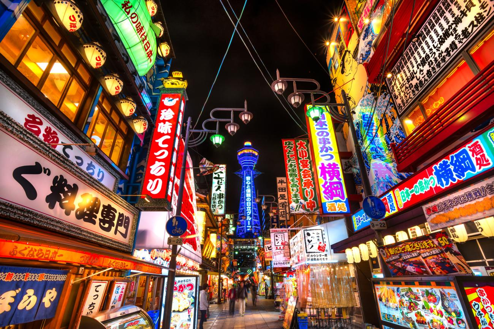

Stop 3: Osaka
Osaka is a large port city and commercial center known for its modern architecture, street food, and hearty nightlife. The Dotonbori district is the center of the city's food culture.

The flashing neon lights and famous signs along the Dotonbori canal.